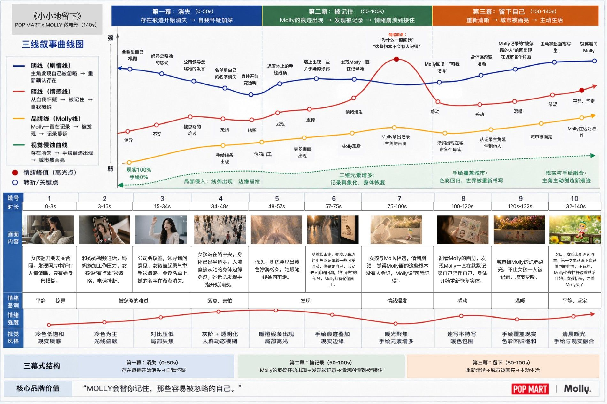
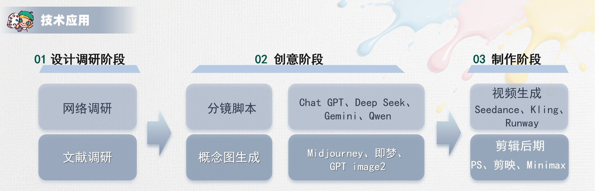
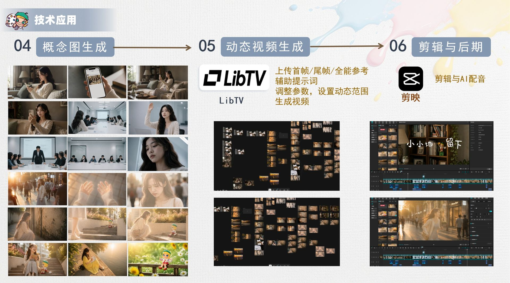

小小地留下
POP MART MOLLY 20TH ANNIVERSARY
治愈系品牌情感短片

POP MART MOLLY 20TH ANNIVERSARY
治愈系品牌情感短片
DESIGN BACKGROUND
在快节奏的都市生活与数字社交环境下，年轻人越来越容易陷入"被忽略感"。人与人之间的连接看似更多，但真正的理解与关注却变得稀缺，许多人逐渐产生存在缺失与自我价值怀疑。
影片聚焦当代年轻人的"存在焦虑感"——害怕自己的努力无人看见、情绪无人理解、善意无人记得。这种长期累积的被忽略感，往往会让人逐渐缩小自我，甚至失去对自身价值的确认。
《小小地留下》借助MOLLY"小画家"的角色设定，以"记录与见证"为切入点，让主角重新发现那些被忽略的温柔瞬间，从而重新确认自身存在的意义，传递"每一个认真生活的人，都值得被看见"的情感价值。
DESIGN APPROACH
影片以"被忽略"与"被看见"为核心主题，围绕年轻人渴望"被理解"情感需求展开叙事。MOLLY作为见证者与陪伴者，通过记录主角生活中的微小善意，帮助她重新发现自身价值，完成从"怀疑存在"到"确认存在"的情感转变。
影片采用奇幻现实主义风格，将"消失"具象化为被忽略感的视觉表达。前期以冷灰低饱和度色调、长焦距构图营造压抑与疏离感；后期通过手绘线条、暖色光感与二维涂鸦逐渐侵入现实空间，形成现实与幻想交融的视觉体验。
影片采用三幕式结构：第一幕建立主角被忽略的现实困境；第二幕通过MOLLY的出现展开"被记录"的心灵旅程；第三幕完成情感释放与自我确认，实现从"消失"到"留下"的成长闭环。整个故事以"小人物的微光"为切口，传递温暖而治愈的品牌价值。
BRAND RESEARCH
一个以IP（知识产权）运营为核心的潮流文化娱乐集团，致力于用"创造潮流，传递美好"的品牌文化构建全球潮流玩具乐园。
IP开发与运营：签约全球艺术家，孵化原创潮流IP，进行全产业链商业化运营。自有渠道：构建覆盖潮流玩具全渠道销售的综合运营平台。
设计师IP潮流玩具：以盲盒为核心，包含常规款与稀有隐藏款。多元衍生品：开发毛绒玩偶、大尺寸MEGA珍藏系列、徽章、钥匙扣等。
线下主题乐园：打造集IP展示、互动、休闲于一体的沉浸式线下空间，提供深度的品牌体验。定期举办IP主题展，持续增强品牌黏性。
USER INSIGHT
18-30岁都市青年，生活节奏快，情绪敏感且内敛，常常忽略自己。渴望被理解、被认可，却不擅长主动表达需求。
情绪、付出与善意很少被真正看见。
她们缺少真正能够自由"表达自我"的渠道和空间，产生了对"沉默型情绪IP"的强烈依赖，希望通过"安静的陪伴"来释放情绪。
长期"社会化"过程，她们隐藏起真实的自己，缺少"真正属于自己的精神空间"。
DESIGN CONCEPT
治愈系品牌情感短片
情绪广告 + 魔幻现实主义
微电影 + IP故事化表达
"Molly会陪你看见，那些容易忽略的自己。"
围绕主角从被忽略 → 被记录 → 被看见 → 重新留下自己展开。
陪伴感、治愈感、存在感、
自我认同、温暖共鸣
STORY STRUCTURE
画面：家中、公司、街道
含义：建立主角的核心困境，她并非遭遇重大打击，而是在无数微小忽略中慢慢变透明。
画面：出现手绘线条，追寻线条发现路上有关于自己的涂鸦画
含义：MOLLY作为"见证者"正式进入故事。
画面：女孩崩溃，Molly安慰"可我记得"
含义：完成全片最大情感转折。主角身体渐渐恢复。
画面：城市各个角落出现Molly的画
含义：主角完成成长，开启新生活。Molly继续陪伴。
SCRIPT VISUALIZATION

TECHNOLOGY APPLICATION

